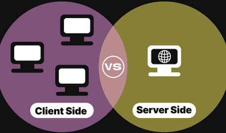

Termen klient syftar till en dator, ett program eller en enhet som hämtar information/resurser från serversida.
TCP, eller transmission control protocol syftar till att upprätta en datorkommunikation mellan sändare och mottagare. Från det sändande sidan paketeras data och tilldelas ett sekvensnummer som har i syfte att se till att den data som skickar kommer i rätt ordning. Från mottagande sida tar TCP emot och ordnar segment i rätt följd och skickar sedan tillbaka en bekräftelse per segment. IP, eller internet protocol adresserar och skickar paket över nätet. Från sändande sida lägger IP till adresser och paketerar data för att sedan skickas över nätet. Från mottagande sida kontrolleras IP och dirigeras till rätt slutadress.
HTTP - är det protokoll som används, det vill säga Hypertext transfer protocol. Webbteknik.abc.se - är domännamnet som visar vilken server som resursen är tillgänglig på. 8082 - är det portnummer som fungerar som en dörr. /kurs1/uppg/u1.html - Syftar till den specifika sökvägen #fragor - är en såkallad fragmentidentifierare, som pekar på en specifik del av webbplatsen
